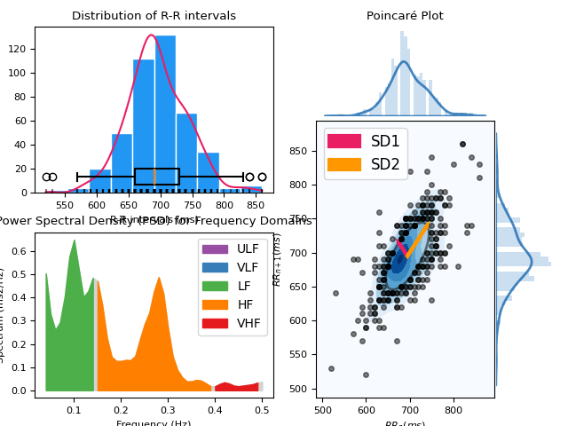

HRV
Contents
HRV#
Main#
hrv()#
- hrv(peaks, sampling_rate=1000, show=False, **kwargs)#
Heart Rate Variability (HRV)
This function computes all HRV indices available in NeuroKit. It is essentially a convenience function that aggregates results from the
time domain,frequency domain, andnon-linear domain.Hint
We strongly recommend checking our open-access paper Pham et al. (2021) on HRV indices for more information.
- Parameters
peaks (dict) – Samples at which R-peaks occur. Can be a list of indices or the output(s) of other functions such as
ecg_peaks(),ppg_peaks(),ecg_process()orbio_process.()sampling_rate (int, optional) – Sampling rate (Hz) of the continuous cardiac signal in which the peaks occur. Should be at least twice as high as the highest frequency in vhf. By default 1000.
show (bool, optional) – If
True, returns the plots that are generates for each of the domains.
- Returns
DataFrame – Contains HRV indices in a DataFrame. If RSP data was provided (e.g., output of
bio_process()), RSA indices will also be included.
See also
hrv_time,hrv_frequency,hrv_nonlinear,hrv_rsa,ecg_peaks(),ppg_peaksExamples
Example 1: Only using a list of R-peaks locations
In [1]: import neurokit2 as nk # Download data In [2]: data = nk.data("bio_resting_5min_100hz") # Clean signal and Find peaks In [3]: ecg_cleaned = nk.ecg_clean(data["ECG"], sampling_rate=100) In [4]: peaks, info = nk.ecg_peaks(ecg_cleaned, sampling_rate=100, correct_artifacts=True) # Compute HRV indices In [5]: hrv_indices = nk.hrv(peaks, sampling_rate=100, show=True)
In [6]: hrv_indices Out[6]: HRV_MeanNN HRV_SDNN HRV_SDANN1 ... HRV_HFD HRV_KFD HRV_LZC 0 694.756381 49.036043 7.277185 ... 1.917341 2.722348 0.873124 [1 rows x 81 columns]
Example 2: Compute HRV directly from processed data
References
Pham, T., Lau, Z. J., Chen, S. H. A., & Makowski, D. (2021). Heart Rate Variability in Psychology: A Review of HRV Indices and an Analysis Tutorial. Sensors, 21(12), 3998. https://doi.org/10.3390/s21123998
Stein, P. K. (2002). Assessing heart rate variability from real-world Holter reports. Cardiac electrophysiology review, 6(3), 239-244.
Shaffer, F., & Ginsberg, J. P. (2017). An overview of heart rate variability metrics and norms. Frontiers in public health, 5, 258.
{kind=link}